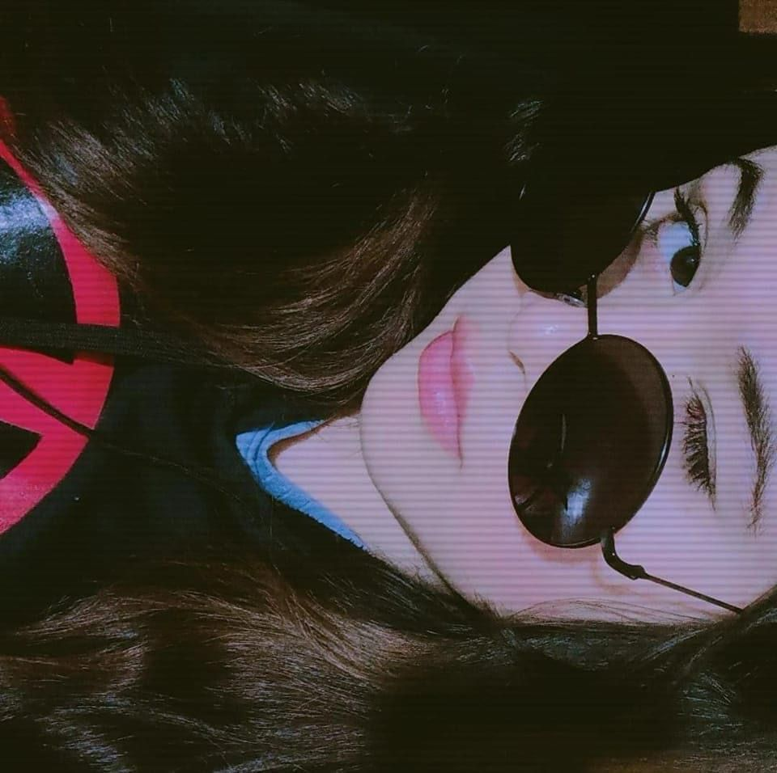
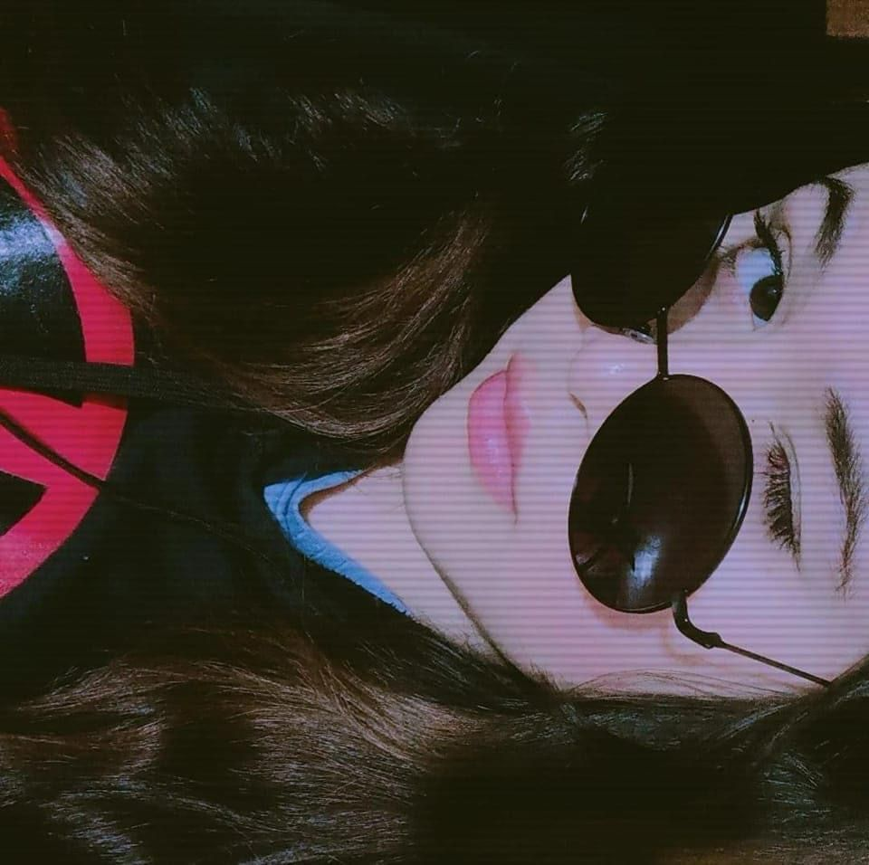

¡Hola!, mi nombre es Adriana Bacilio nací el 26 de julio de 1998 en Guadalajara Jalisco México, mis padres se llaman Eva Adriana Bacilio y Rafael Flores Alvárez. Tengo dos hermanos, Mariana Lizeth de 18 años y Andrés Daniel de 23 años. Estudié Ingeniería Mecatrónica con especialidad en robótica en el Centro de Enseñanza Técnica Industrial, actualmente estudio para ser Desarrolladora de Java FullStack en Generation Mx.